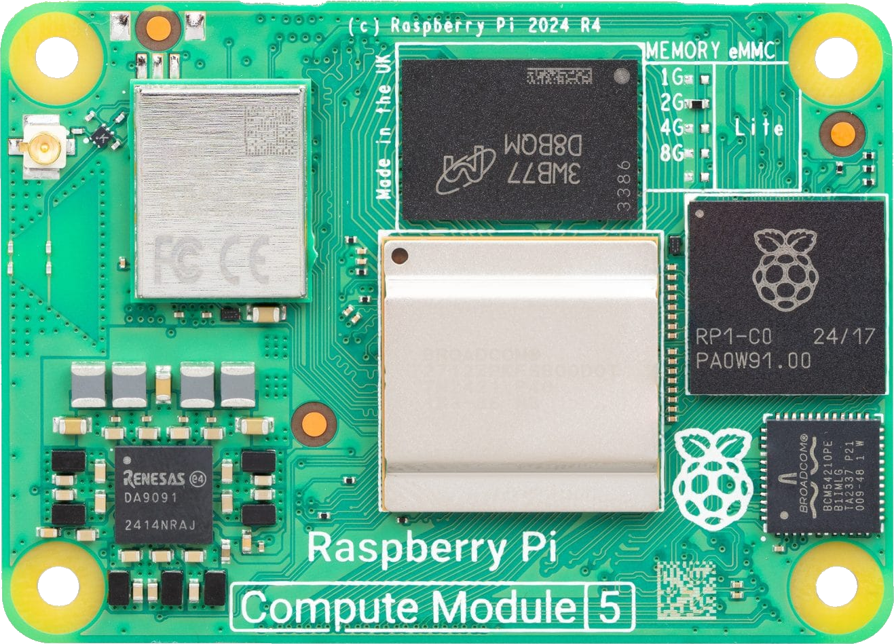
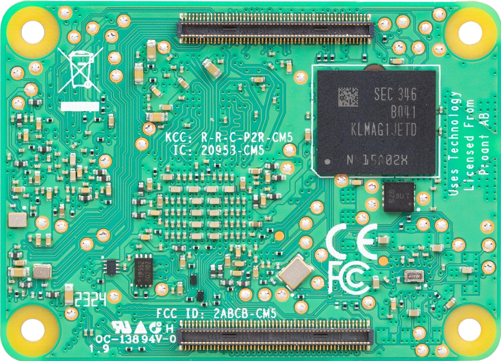

Front / top side

Back / bottom side, X mirrored

Click or hover a point
Side—
Reference—
Name—
Group—
Table X / Y—
Displayed X—
Front/top uses the table X directly. Back/bottom mirrors X as 55 − X, so the displayed bottom-side origin is at the lower-right corner.
Legend
Search examples: ETH, SOC_T, USBC, DEBUG, GND. The same test-point list is drawn on both board images, with X mirrored only on the back/bottom side.